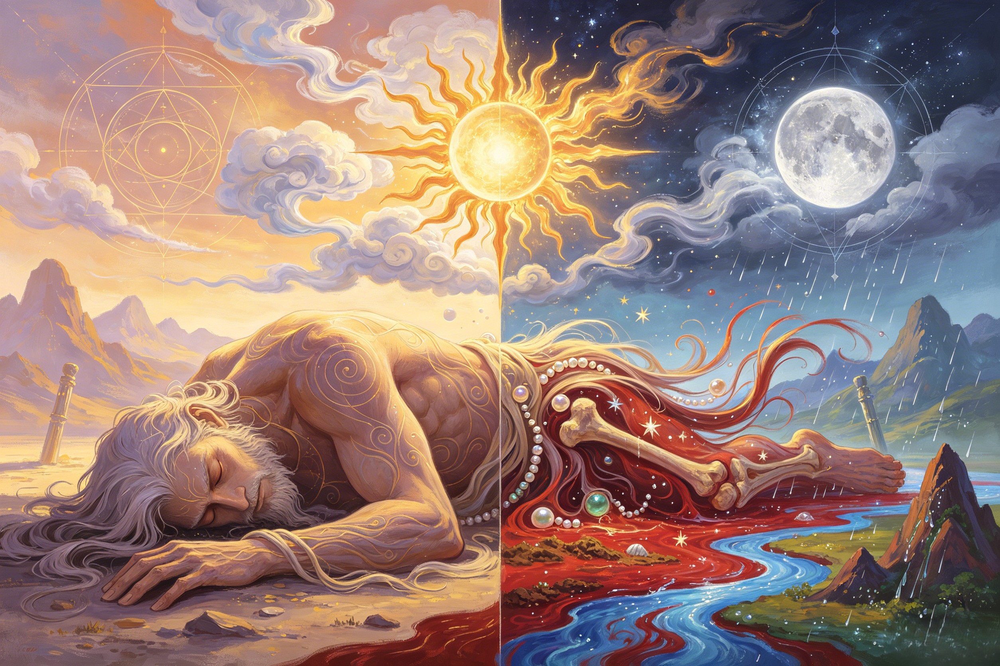

The Great Transformation
When the creator died, the universe was born. Every mountain is his bone. Every river is his blood. Every star is a strand of his hair. The complete anatomy of a world made from a body.
After the cosmic egg shattered and heaven and earth were born, Pangu began the second phase of his existence. He did not rest. He did not celebrate. For another 18,000 years — bringing the total to 36,000 years of unbroken labor — he stood between the rising sky and the thickening earth, one hand pressing upward, one foot stamping downward, holding the two realms apart with nothing but the sheer force of his will. Every day heaven rose ten feet higher. Every day the earth thickened ten feet below. And every day, Pangu grew ten feet taller, so that he could always reach them both. His body stretched to cosmic proportions. His arms became conduits of unimaginable force, his spine the axis of the world. His muscles bulged like nascent mountain ranges. His skin cracked under the strain like tectonic plates grinding against each other. He was the living axis mundi — the pillar that connected and separated the two halves of existence. Pangu did not die from a wound. He was not killed by an enemy. There was no battle, no betrayal, no cosmic accident. He died of exhaustion — or, more precisely, of completion. The work was finished. Heaven and earth had reached their final separation: 90,000 li (approximately 45,000 kilometers) of open air between them. The difference in density, in temperature, in spiritual quality between the yang sky and the yin earth had become permanent and self-sustaining. Pangu had made himself unnecessary. He had worked until his purpose was fulfilled, and then he let go. This is a uniquely Chinese vision of creation. It stands in stark contrast to the Biblical God who creates through command and then rests on the seventh day, transcendent and unchanging. Pangu's creation is immanent and sacrificial — he did not command the world into being from outside; he became the world from within. Nüwa would later perform a similar act of sacrificial maintenance when she repaired the sky after the battle with Gong Gong, melting five-colored stones to patch the heavens. Taishang Laojun's philosophy of natural processes — of things arising, fulfilling their purpose, and returning to the Dao — finds its ultimate expression in Pangu's exhaustion. The first being did not fail. He completed his function, and his function was to make a world.
Pangu lay down on the newly-formed earth, and his body began to transform. This is the central miracle of Chinese creation mythology — not a god speaking light into being, but a living body dissolving into the fabric of existence, each part becoming something essential, beautiful, and permanent. The transformation unfolded in a sequence of thirteen distinct metamorphoses, each one a gift to the universe that would follow. His breath, leaving his lungs for the last time, swirled upward and became the wind and clouds — the first weather, the first movement of air across the face of the newborn world. His voice, the last sound he would ever make, escaped his throat as a low rumble and became thunder — the voice of the world itself, speaking in storms. His left eye rose from his face and ascended into the sky, blazing with golden light — the sun, the yang principle made visible, the source of warmth and life. His right eye followed, gentler and cooler, glowing with silver radiance — the moon, the yin principle, governing tides and cycles and the quiet hours of night. His four limbs stretched outward to the four horizons and became the four cardinal directions — the pillars that would hold the sky in place forever, performing in death the same function they had performed in life. His blood spilled across the land, flowing into channels and basins, becoming the rivers and seas — the Yellow River, the Yangtze, every stream and lake and ocean, all carrying the life-force of the first being through the veins of the world. His flesh decomposed and spread across the bedrock, becoming soil — rich, dark, fertile earth from which plants would grow and creatures would feed. His head hair scattered across the vault of heaven and became the stars — billions of lights, each one a single strand of Pangu's hair, still shining in the darkness. His body hair rooted itself in the earth and became trees and grass — the first forests, the first meadows, the first green things reaching toward the sun that had been his eye. His bones pushed upward through the soil and became mountain ranges — the Himalayas, the Kunlun Mountains, every peak and ridge and valley, the skeleton of the world rising from the flesh of its maker. His teeth broke apart and scattered, becoming precious stones and metals — the diamonds, the gold, the jade hidden beneath the surface. His marrow seeped into the deep earth and crystallized into jade — the most sacred substance in Chinese culture, the essence of Pangu's inner life made solid. His sweat, the last moisture of his dying effort, rose into the atmosphere and fell as rain and dew — the first water cycle, the first refreshment for the growing world. And in one variant of the myth, the parasites that had lived on his body were caught by the wind of his final breath and became human beings — the first people, born from the living ecosystem of the first body. The entire universe, from the highest star to the deepest ocean trench, from the mightiest mountain to the smallest blade of grass, is made of Pangu. Xiwangmu's Jade Spring on Kunlun Mountain flows with the same cosmic waters that were once Pangu's blood. The Jade Emperor's celestial palace sits in a heaven that was once the dome of Pangu's skull. The Bull Demon King's mountain-home is built from bone that was once Pangu's rib.
The transformation of Pangu's body into the world is the single most philosophically consequential image in Chinese mythology. It is not merely a creation story — it is the foundational statement of Chinese cosmology, the premise from which nearly every major school of Chinese thought derives its understanding of reality. The key insight is this: Pangu's transformation is not metaphor. When the myth says that mountains are Pangu's bones, it does not mean they are like bones. It means they are bones. When it says rivers are his blood, it means they are blood. The world is not a symbol of Pangu's body. The world IS Pangu's body, transformed but continuous. This has profound implications. First, the cosmos is alive. Chinese thought has never accepted the Western dualism between spirit and matter, between living and non-living. If the world is made from the body of a living being, then the world itself is a living organism — not a machine to be analyzed, but a body to be understood through resonance and relationship. This view underlies the concept of correlative cosmology that dominated Chinese thought for two millennia: the idea that patterns in the human body mirror patterns in the cosmos, that the emperor's virtue affects the weather, that a disruption in one realm inevitably echoes in another. Second, there is no separation between creator and creation. In the Western monotheistic traditions, God creates the world but is not the world. Pangu creates the world by becoming the world. This means that the divine is not somewhere else, looking down on an alien creation. The divine is the stone you kick on the path, the water you drink from the river, the air you breathe. Every natural phenomenon is a trace of the first being. Third, the human body is a microcosm of the universe. Traditional Chinese Medicine (TCM), which developed over thousands of years, is built on the premise that the body's internal landscape mirrors the external landscape. The body's energy channels (meridians) are like rivers. The bones are like mountains. The breath is like wind. The concept of qi (vital energy) flowing through the body is the same concept as wind flowing through the valleys of Pangu's transformed skeleton. Feng shui, the art of harmonizing human dwellings with the natural environment, seeks to align buildings with the "dragon veins" (longmai) of the earth — the same energy pathways that were once the meridians of Pangu's cosmic body. The philosophical contrast with Western thought could not be sharper. In the Platonic and Christian traditions, the material world is a shadow, a fallen realm, something to be transcended. Nature is mechanical, soulless, available for exploitation. In the Chinese tradition, rooted in the Pangu myth, the material world is sacred because it IS the body of the first being. To harm nature is to harm Pangu's body. To heal nature is to heal Pangu's body. The Buddha's teaching of dependent origination — that all things arise in relation to all other things, that nothing exists in isolation — resonates deeply with this vision of a cosmos that is one continuous body. Guanyin's infinite compassion, flowing through the world like Pangu's blood, finds its natural home in a universe where all beings share the same substance.
Pangu's body was now the world. But the world was empty. The mountains rose. The rivers flowed. The wind blew, and the rain fell. And for a long time — perhaps another cosmic age — there was only the silent, beautiful, empty world, waiting for the beings who would inhabit it. Then the stories begin. Nüwa walked on the soil that had been Pangu's flesh and found it good. She knelt by the river that had been his blood and scooped up the yellow earth that had washed ashore. She shaped it into a figure — small, delicate, unlike the titanic forms of the cosmic age. She breathed on it, and the first human being opened its eyes. Nüwa shaped more figures, by hand at first, then by flicking her wrist and letting the droplets of mud become people. She taught them to love, to build, to worship. Humanity spread across Pangu's body-world, walking on his transformed bones, drinking from his transformed blood, building homes from his transformed flesh. The Jade Emperor established his celestial court in the highest heaven — the dome of Pangu's skull, the place closest to his departed consciousness. From there, the Jade Emperor's bureaucracy organized the cosmos: the gods of rain and thunder, the judges of the underworld, the celestial army that would one day defend heaven against the Monkey King's rebellion. Xiwangmu, the Queen Mother of the West, took her seat on Kunlun Mountain — one of Pangu's tallest bones — and planted her Peach Garden in the rich soil of his transformed flesh. The 3,600 peach trees, watered by the Jade Spring, draw their life from the same substance that once pulsed through Pangu's veins. Taishang Laojun built his furnace deep in the thirty-third heaven, refining elixirs of immortality from the minerals that were once Pangu's teeth and marrow. The first creatures roamed the forests that grew from Pangu's body hair. In some accounts, the first animals were the dragon, the phoenix, the qilin, and the tortoise — the Four Celestial Beings, born directly from Pangu's dying thoughts. But Pangu is not truly gone. In Taoist tradition, his spirit did not vanish — it dispersed into the Dao itself, becoming the underlying pattern and principle of the universe he had become. The Dao is not a god in the Western sense, but the way — the natural order, the rhythm of existence. Pangu's spirit, having completed the work of creation, merged with this order and continues to guide the world not through intervention but through immanence. In folk belief, natural phenomena that seem to defy explanation — earthquakes, volcanic eruptions, sudden storms — are sometimes attributed to Pangu stirring in his transformed state. The mountain that shakes is Pangu's bone shifting. The volcano that erupts is Pangu's blood heating. The storm that rages is Pangu's breath quickening. The world is a body, and bodies are never completely still. Erlang Shen, the divine investigator who patrols the mortal realm with his loyal hound and his truth-seeing third eye, is sometimes said to be watching for the movements of Pangu's cosmic body — ensuring that the first being's slumber remains peaceful. Nezha, who himself underwent a body transformation (reborn from a lotus after destroying his own flesh), carries an echo of Pangu's metamorphosis in his own story. The cycle continues: bodies transform, worlds emerge, and the universe lives.
According to the Pangu creation myth, every part of Pangu's body transformed into a corresponding part of the natural world. His breath became the wind and clouds, his voice became thunder, his left eye became the sun, his right eye became the moon, his four limbs became the four cardinal directions, his blood became rivers and seas, his flesh became soil, his head hair became stars, his body hair became trees and grass, his bones became mountain ranges, his teeth became precious stones and metals, his marrow became jade and pearls, and his sweat became rain and dew. In one variant, the parasites on his body became human beings. This complete catalogue of transformation — sometimes counted as thirteen distinct metamorphoses — is the central miracle of the Pangu myth and the foundational image of Chinese cosmology: the universe is a living body, and every natural phenomenon carries the trace of the first being's sacrifice.
The answer in Chinese philosophical tradition is both. Pangu died as an individual, self-aware being — his consciousness ceased to exist as a separate entity, and his body ceased to be a single integrated organism. But his substance did not disappear. It transformed into the world. In Chinese thought, this is not a contradiction. The concept of hua (化) — transformation or change — is fundamental to Chinese cosmology. Things do not go from being to non-being; they transform from one state to another. Pangu's individual existence ended, but his being continued as mountains, rivers, stars, and wind. The Daoist tradition teaches that all beings eventually return to the Dao, the source from which they came. Pangu was the first being to make this return, and his transformation set the pattern for all future life and death. This view of death as transformation rather than annihilation is deeply comforting in Chinese culture and underlies the practices of ancestor veneration, where deceased ancestors continue to exist in a different form and maintain relationships with their living descendants.
The differences between the Pangu myth and the Biblical Genesis account reveal fundamental contrasts between Chinese and Western worldviews. Genesis: God speaks, and the world obeys. Creation is an act of command by a transcendent deity who exists entirely outside and before creation. God creates for six days and rests on the seventh. Humanity is made in God's image, given dominion over nature. Creator and creation remain forever distinct. Pangu: The first being labors for 36,000 years, holding heaven and earth apart with his body. When he dies of exhaustion, his body becomes the world. Creation is an act of sacrifice and immanence. There is no rest — only completion. Humanity emerges from Pangu's body (or its parasites), sharing the same substance as mountains and rivers. Creator and creation are identical. The Biblical God creates from outside; Pangu creates from within. In Genesis, nature is a creation to be stewarded; in the Pangu myth, nature is a body to be respected as one's own.
Dive Deeper